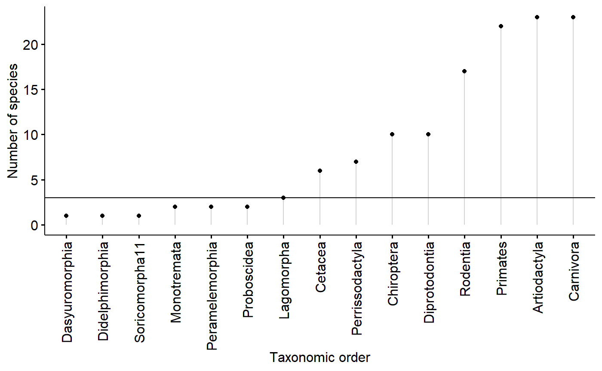

Appendix-6a-Analysis-script.RmdThis script implements my re-analysis of the Skibiel et al mammals’ milk dataset. Skibiel et al made the unconventional but well supported conclusion that there was not a relationship between body size and nutrional content of milk, including fat content. The note, however, that some groups might have a relationship, while others might not, but on the whole there was no relationship between body size and fat. Most variation in nutrional content was therefore due to differences in evolutionary history and not body size senu stricto.
I take a model comparison approach using AICc to compare models similar to what Skibiel concluded best fit the data (fat ~ diet) with one that allows the relationship between fat and body size to vary between groups of organisms.
Like Skibiel I find a very strong phylogentic signal on fat content of milk. I use this phyolgeny-only model as my null model. Allowing fat content to vary differently with body size between different groups fits the data slightly better than the null model, but this difference is only a delta AICc (dAICc) of 1.4. Surprisingly, a model which includes diet doesn’t perform as well as null model, which contradicts Skibiel et al. This difference in results is likely due to my use of random effets to represent taxonomic structure (species nested within genera, genera within families, families within orders) rather than a precise phylogeny.
library(dplyr) # for exploratory analyses
#>
#> Attaching package: 'dplyr'
#> The following objects are masked from 'package:stats':
#>
#> filter, lag
#> The following objects are masked from 'package:base':
#>
#> intersect, setdiff, setequal, union
library(ggpubr) # plotting using ggplto2
#> Loading required package: ggplot2
#> Loading required package: magrittr
library(cowplot)
#>
#> Attaching package: 'cowplot'
#> The following object is masked from 'package:ggpubr':
#>
#> get_legend
#> The following object is masked from 'package:ggplot2':
#>
#> ggsave
library(lme4)
#> Loading required package: Matrix
library(arm)
#> Loading required package: MASS
#>
#> Attaching package: 'MASS'
#> The following object is masked from 'package:dplyr':
#>
#> select
#>
#> arm (Version 1.10-1, built: 2018-4-12)
#> Working directory is C:/Users/lisanjie/Documents/1_R/git/mammalsmilkRA/vignettes
library(stringr)
library(bbmle)
#> Loading required package: stats4
#>
#> Attaching package: 'bbmle'
#> The following object is masked from 'package:dplyr':
#>
#> slice
library(plotrix) ##std.error function for SE
#>
#> Attaching package: 'plotrix'
#> The following object is masked from 'package:arm':
#>
#> rescale
library(psych)
#>
#> Attaching package: 'psych'
#> The following object is masked from 'package:plotrix':
#>
#> rescale
#> The following objects are masked from 'package:arm':
#>
#> logit, rescale, sim
#> The following objects are masked from 'package:ggplot2':
#>
#> %+%, alpha
library(here)
#> here() starts at C:/Users/lisanjie/Documents/1_R/git/mammalsmilkRAfile. <- "Appendix-2-Analysis-Data_mammalsmilkRA.csv"
path. <- here("/inst/extdata/",file.)
milk <- read.csv(path., skip = 3)head(milk)
#> ord fam spp mass.fem gest.mo
#> 1 Artiodactyla Bovidae Bos frontalis 800000 9.02
#> 2 Artiodactyla Bovidae Capra ibex 53000 5.60
#> 3 Artiodactyla Bovidae Connocheates taurinus taurinus 170500 8.32
#> 4 Artiodactyla Bovidae Connocheates gnou 200000 8.50
#> 5 Artiodactyla Bovidae Damaliscus pygargus phillipsi 61000 8.00
#> 6 Artiodactyla Bovidae Gazella dorcas 20600 4.74
#> lac.mo mass.litter repro.output dev.birth diet arid biome N
#> 1 4.5 26949 0.03 3 herbivore no terrestrial 4+
#> 2 7.5 3489 0.07 3 herbivore no terrestrial 24
#> 3 8.0 17717 0.10 3 herbivore yes terrestrial 5
#> 4 7.5 11110 0.06 3 herbivore yes terrestrial 3
#> 5 4.0 6500 0.11 3 herbivore yes terrestrial 4
#> 6 2.8 1771 0.09 3 herbivore yes terrestrial 16
#> fat gest.month lacat.mo prot sugar energy
#> 1 7.0 9.02 4.5 6.3 5.2 1.21
#> 2 12.4 5.60 7.5 5.7 NA NA
#> 3 7.5 8.32 8.0 4.1 5.3 1.13
#> 4 5.5 8.50 7.5 4.3 4.1 0.91
#> 5 8.6 8.00 4.0 5.6 4.9 1.31
#> 6 8.8 4.74 2.8 8.8 NA NA
tail(milk)
#> ord fam spp mass.fem gest.mo
#> 125 Rodentia Muridae Pseudomys australis 65 1.02
#> 126 Rodentia Muridae Rattus norvegicus 253 0.71
#> 127 Rodentia Octodontidae Octodon degus 235 2.96
#> 128 Rodentia Scuiridae Tamias amoenus 53 0.98
#> 129 Rodentia Scuiridae Urocitellus columbianus 406 0.84
#> 130 Soricomorpha11 Soricidae Crocidura russula 14 0.97
#> lac.mo mass.litter repro.output dev.birth diet arid biome
#> 125 0.9 13 0.20 0 herbivore yes terrestrial
#> 126 0.8 51 0.20 0 omnivore no terrestrial
#> 127 1.2 74 0.31 3 herbivore yes terrestrial
#> 128 1.5 14 0.26 0 omnivore no terrestrial
#> 129 1.0 32 0.08 0 herbivore no terrestrial
#> 130 0.8 4 0.29 0 carnivore no terrestrial
#> N fat gest.month lacat.mo prot sugar energy
#> 125 7-Jun 12.1 1.02 0.9 6.4 3.6 1.62
#> 126 18-Mar 8.8 0.71 0.8 8.1 3.8 1.43
#> 127 7 20.1 2.96 1.2 4.4 2.7 2.20
#> 128 11 21.7 0.98 1.5 8.1 4.3 2.62
#> 129 26 9.2 0.84 1.0 10.7 3.4 1.60
#> 130 3 30.0 0.97 0.8 9.4 3.0 3.40
summary(milk)
#> ord fam spp
#> Artiodactyla :23 Bovidae :13 Acomys cahirinus : 1
#> Carnivora :23 Cercopithecidae: 8 Alces alces : 1
#> Primates :22 Cervidae : 7 Aloutta palliata : 1
#> Rodentia :17 Muridae : 7 Aloutta seniculus : 1
#> Chiroptera :10 Otariidae : 7 Arctocephalus australis: 1
#> Diprotodontia:10 Phocidae : 7 Arctocephalus gazella : 1
#> (Other) :25 (Other) :81 (Other) :124
#> mass.fem gest.mo lac.mo mass.litter
#> Min. : 8 Min. : 0.400 Min. : 0.300 Min. : 0.3
#> 1st Qu.: 857 1st Qu.: 1.405 1st Qu.: 1.625 1st Qu.: 42.0
#> Median : 5716 Median : 5.000 Median : 4.500 Median : 423.5
#> Mean : 2229475 Mean : 5.624 Mean : 6.092 Mean : 52563.8
#> 3rd Qu.: 107500 3rd Qu.: 8.365 3rd Qu.: 8.225 3rd Qu.: 7038.2
#> Max. :170000000 Max. :21.460 Max. :42.000 Max. :2272500.0
#>
#> repro.output dev.birth diet arid
#> Min. :0.00003 Min. :0.000 carnivore:32 no :91
#> 1st Qu.:0.04000 1st Qu.:1.000 herbivore:61 yes:39
#> Median :0.08000 Median :2.000 omnivore :37
#> Mean :0.10374 Mean :1.831
#> 3rd Qu.:0.13750 3rd Qu.:3.000
#> Max. :0.50000 Max. :4.000
#>
#> biome N fat gest.month
#> aquatic : 22 4 :13 Min. : 0.20 Min. : 0.400
#> terrestrial:108 3 :11 1st Qu.: 4.65 1st Qu.: 1.405
#> 6 :10 Median : 8.55 Median : 5.000
#> 7 : 9 Mean :13.99 Mean : 5.624
#> 5 : 8 3rd Qu.:16.82 3rd Qu.: 8.365
#> 24 : 5 Max. :61.10 Max. :21.460
#> (Other):74
#> lacat.mo prot sugar energy
#> Min. : 0.300 Min. : 1.100 Min. : 0.02 Min. :0.360
#> 1st Qu.: 1.625 1st Qu.: 4.125 1st Qu.: 3.00 1st Qu.:0.965
#> Median : 4.500 Median : 6.750 Median : 4.70 Median :1.365
#> Mean : 6.092 Mean : 6.673 Mean : 4.94 Mean :1.680
#> 3rd Qu.: 8.225 3rd Qu.: 9.200 3rd Qu.: 6.60 3rd Qu.:2.045
#> Max. :42.000 Max. :15.800 Max. :14.00 Max. :5.890
#> NA's :16 NA's :16genus_spp_subspp_mat <- milk$spp %>% str_split_fixed(" ", n = 3)
milk$genus <- genus_spp_subspp_mat[,1]I generally prefer to make sure all of my transformations are represented in my “analysis data”, but I have not yet updated that file yet.
milk$fat.log10 <- log10(milk$fat)
milk$mass.fem.log10 <- log10(milk$mass.fem)All aquatic mammals in the dataset are carnviores
with(milk,
table(biome,
diet))
#> diet
#> biome carnivore herbivore omnivore
#> aquatic 22 0 0
#> terrestrial 10 61 37I am going to make a new categorical variable with 4 levels which combines the 3 levels of diet with the 2 levels of biome.
milk$biome.diet <- paste(milk$biome,
milk$diet,
sep = "-")
summary(factor(milk$biome.diet))
#> aquatic-carnivore terrestrial-carnivore terrestrial-herbivore
#> 22 10 61
#> terrestrial-omnivore
#> 37Summarize order by number of animals in each group
orders <- milk %>%
group_by(ord) %>%
summarise(order.N = n())For the model I want to run, I need at least 3 data points (species) per group (order)
ggdotchart(data = orders,
x = "ord",
y = "order.N",
add = "segment",
ylab = "Number of species",
xlab = "Taxonomic order") +
geom_hline(yintercept = 3)
I will code each specis as being a member of an order w/ greater than 2 (“use”) or less than 2 species (“drop”)
orders$order.N.3.plus <- ifelse(orders$order.N >2,
"use",
"drop")I’ll then merge this summary dataframe orders into the big dataframe
milk2 <- merge(milk,orders)
dim(milk)
#> [1] 130 23
dim(milk2)
#> [1] 130 25Then I’ll select just the rows which can be used.
i.use <- which(milk2$order.N.3.plus == "use")
milk.working <- milk2[i.use, ]milk.working[which(milk.working$fat.log10 <0.5), ]
#> ord fam spp mass.fem
#> 60 Chiroptera Pteropodidae Pteropus poliocephalus 800
#> 73 Diprotodontia Potoroidae7 Potorous tridactylus 1047
#> 74 Diprotodontia Pseudocheiridae8 Pseudocheirus peregrinus 910
#> 82 Perrissodactyla Equidae Equus asinus 250000
#> 83 Perrissodactyla Equidae Equus burchellii 276000
#> 84 Perrissodactyla Equidae Equus ferus przewalskii 250000
#> 85 Perrissodactyla Equidae Equus zebra 262000
#> 86 Perrissodactyla Rhinocerotidae Diceros bicornis 884000
#> 87 Perrissodactyla Tapiridae Tapirus bairdii 300000
#> 89 Primates Atelidae12 Aloutta seniculus 5390
#> 90 Primates Atelidae12 Aloutta palliata 6400
#> 94 Primates Cercopithecidae Chlorocebus pygerythrus 5750
#> 98 Primates Cercopithecidae Miopithecus talapoin 1120
#> 104 Primates Hominidae Gorilla beringei beringei 90000
#> 105 Primates Lemuridae Eulemur fulvus 2500
#> 106 Primates Lemuridae Eulemur macaco 2250
#> 107 Primates Lemuridae Eulemur rubriventer 2000
#> 108 Primates Lemuridae Eulemur mongoz 1350
#> gest.mo lac.mo mass.litter repro.output dev.birth diet arid
#> 60 6.00 5.5 69.0 0.0900 2 herbivore no
#> 73 1.27 1.4 0.3 0.0003 0 omnivore yes
#> 74 3.50 7.3 0.6 0.0007 0 herbivore no
#> 82 11.97 13.0 29167.0 0.1200 3 herbivore yes
#> 83 12.16 10.8 32292.0 0.1200 3 herbivore yes
#> 84 11.50 10.5 30000.0 0.1200 3 herbivore yes
#> 85 12.02 10.0 30000.0 0.0100 3 herbivore yes
#> 86 16.12 19.9 34167.0 0.0400 2 herbivore yes
#> 87 13.17 12.0 9400.0 0.0300 3 herbivore no
#> 89 6.37 12.3 354.0 0.0700 2 herbivore no
#> 90 6.22 14.2 369.0 0.0600 2 herbivore no
#> 94 5.50 8.5 318.0 0.0600 2 omnivore no
#> 98 5.40 5.4 188.0 0.1700 2 omnivore no
#> 104 8.50 42.0 1600.0 0.0200 2 herbivore no
#> 105 4.02 5.0 85.0 0.0300 2 omnivore no
#> 106 4.37 5.2 79.0 0.0400 2 omnivore no
#> 107 4.28 3.3 86.0 0.0400 2 omnivore no
#> 108 4.29 5.1 71.0 0.0500 2 omnivore no
#> biome N fat gest.month lacat.mo prot sugar energy
#> 60 terrestrial 31 2.0 6.00 5.5 2.5 6.2 0.57
#> 73 terrestrial 5-Mar 3.0 1.27 1.4 10.0 14.0 1.41
#> 74 terrestrial >8 3.0 3.50 7.3 4.5 12.5 1.03
#> 82 terrestrial 9 1.8 11.97 13.0 1.7 5.9 0.50
#> 83 terrestrial 5 2.2 12.16 10.8 1.6 7.0 0.57
#> 84 terrestrial 14 1.5 11.50 10.5 1.6 6.7 0.50
#> 85 terrestrial 7 1.0 12.02 10.0 1.6 6.9 0.46
#> 86 terrestrial 11 0.2 16.12 19.9 1.4 6.6 0.36
#> 87 terrestrial 4 1.9 13.17 12.0 4.6 5.3 0.65
#> 89 terrestrial 7 1.1 6.37 12.3 1.9 6.6 0.47
#> 90 terrestrial 7 1.6 6.22 14.2 2.2 6.7 0.54
#> 94 terrestrial 4 3.1 5.50 8.5 1.6 8.5 0.71
#> 98 terrestrial 4 3.0 5.40 5.4 2.1 7.2 0.68
#> 104 terrestrial 7 1.9 8.50 42.0 1.4 6.8 0.52
#> 105 terrestrial 6 0.9 4.02 5.0 1.3 8.5 0.49
#> 106 terrestrial 7 1.1 4.37 5.2 1.5 8.4 0.52
#> 107 terrestrial 3 0.8 4.28 3.3 1.1 8.9 0.49
#> 108 terrestrial 4 0.7 4.29 5.1 1.3 7.9 0.45
#> genus fat.log10 mass.fem.log10 biome.diet order.N
#> 60 Pteropus 0.30103000 2.903090 terrestrial-herbivore 10
#> 73 Potorous 0.47712125 3.019947 terrestrial-omnivore 10
#> 74 Pseudocheirus 0.47712125 2.959041 terrestrial-herbivore 10
#> 82 Equus 0.25527251 5.397940 terrestrial-herbivore 7
#> 83 Equus 0.34242268 5.440909 terrestrial-herbivore 7
#> 84 Equus 0.17609126 5.397940 terrestrial-herbivore 7
#> 85 Equus 0.00000000 5.418301 terrestrial-herbivore 7
#> 86 Diceros -0.69897000 5.946452 terrestrial-herbivore 7
#> 87 Tapirus 0.27875360 5.477121 terrestrial-herbivore 7
#> 89 Aloutta 0.04139269 3.731589 terrestrial-herbivore 22
#> 90 Aloutta 0.20411998 3.806180 terrestrial-herbivore 22
#> 94 Chlorocebus 0.49136169 3.759668 terrestrial-omnivore 22
#> 98 Miopithecus 0.47712125 3.049218 terrestrial-omnivore 22
#> 104 Gorilla 0.27875360 4.954243 terrestrial-herbivore 22
#> 105 Eulemur -0.04575749 3.397940 terrestrial-omnivore 22
#> 106 Eulemur 0.04139269 3.352183 terrestrial-omnivore 22
#> 107 Eulemur -0.09691001 3.301030 terrestrial-omnivore 22
#> 108 Eulemur -0.15490196 3.130334 terrestrial-omnivore 22
#> order.N.3.plus
#> 60 use
#> 73 use
#> 74 use
#> 82 use
#> 83 use
#> 84 use
#> 85 use
#> 86 use
#> 87 use
#> 89 use
#> 90 use
#> 94 use
#> 98 use
#> 104 use
#> 105 use
#> 106 use
#> 107 use
#> 108 usem.slopes <- lmer(fat.log10 ~ 1 +
(mass.fem.log10|ord) +
(1|fam) +
(1|genus),
data = milk.working)ICtab(m.null,
m.diet,
m.mass,
m.slopes,
m.slopes.diet,
m.slopes.x.diet,
m.slopes.x.biome,
type ="AICc",
base = T,
logLik = T,
weights = T)
#> logLik AICc dLogLik dAICc df weight
#> m.slopes -1.2 17.3 5.3 0.0 7 0.5409
#> m.null -4.1 18.7 2.3 1.4 5 0.2649
#> m.diet -2.9 20.7 3.5 3.4 7 0.0975
#> m.slopes.diet -0.9 21.4 5.5 4.1 9 0.0699
#> m.slopes.x.biome -1.0 24.1 5.4 6.8 10 0.0182
#> m.mass -6.4 25.6 0.0 8.3 6 0.0087
#> m.slopes.x.diet -5.3 37.5 1.1 20.2 12 <0.001